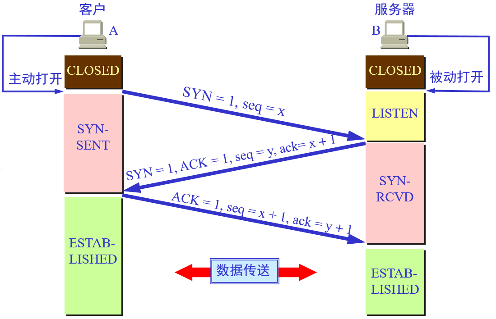
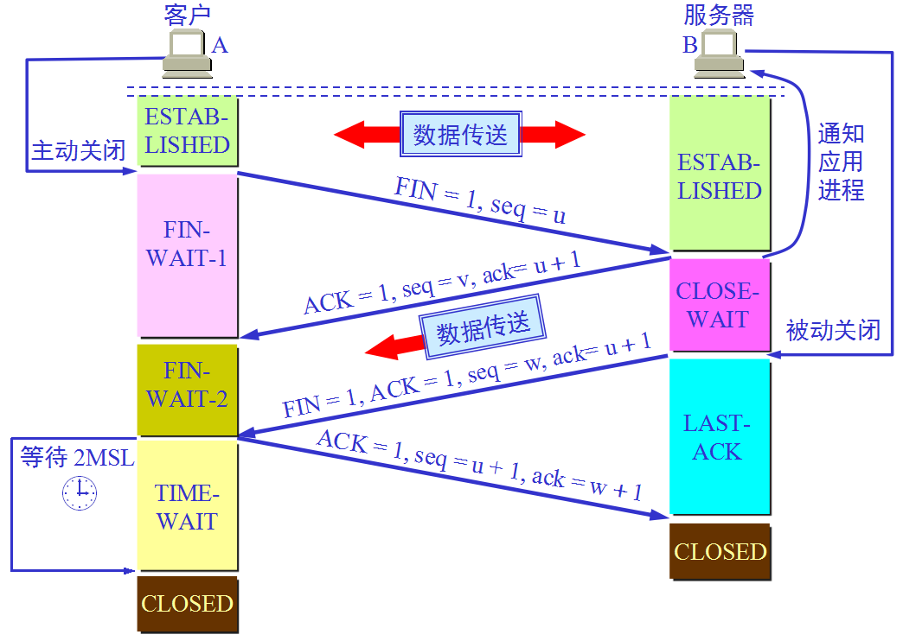

TCP三次握手和四次挥手
三次握手
简述
首先由客户端（A）发送连接请求报文，服务器（B）在收到连接请求报文后向 A 发送一个确认信息，表示已收到，A 在收到这个确认信息之后再次向服务器发送确认信息，表示收到了来自服务器的确认信息，双方可以建立 TCP 连接

具体步骤
最初客户端和服务器都是 CLOSED 状态，服务器创建传输控制块 TCB（Transmission Control Block），准备接受客户端进程的连接请求，被动打开连接后会处于 LISTEN 状态
第一次握手
A 的 TCP 客户进程创建传输控制块 TCB，然后向 B 发送请求报文（SYN 包）
报文首部的同部位（SYN，Synchronize Sequence Numbers）置为 1，初始序列号 seq 为一个随机值 x，此时 TCP 客户进程进入 SYN-SENT （同步已发送）状态
1
2SYN = 1
seq = xSYN 为 1 的报文段不能携带数据，但要消耗一个序列号
第二次握手
B 在收到连接请求报文后，如果同意建立连接，则向 A 发送确认报文（SYN + ACK 包）
报文首部 SYN 置为 1，ACK 同样置为 1，确认号 ack 为 x + 1，序号 seq 为 y，此时 TCP 服务进程进入 SYN-RCVD （同步收到）状态
1
2
3
4SYN = 1
ACK = 1
seq = y
ack = x + 1第三次握手
TCP 客户进程收到 B 的确认后，向 B 回复确认报文段（ACK 包）
报文首部ACK 置为 1，确认号 ack 为 y + 1，序号 seq 为 x + 1，此时 TCP 客户进程进入 ESTABLISHED （已建立连接）状态
1
2
3ACK = 1
ack = y + 1
seq = x + 1ACK 报文段可以携带数据，不携带数据则不消耗序号，当 B 收到 A 的确认后，也进入 ESTABLISHED 状态
其他问题
为什么A还要发送一次确认呢？可以二次握手吗？
主要是为了防止已失效的连接请求报文段突然又传送到了B，因而产生错误
如 A 发出连接请求，但因连接请求报文丢失而未收到确认，于是 A 再重新发送一次连接请求，后来收到了确认，建立了连接。数据传输完毕后，就释放了连接。这种情况下 A 发出了两个连接请求报文段，其中第一个丢失，第二个到达了 B ，但是第一个丢失的报文段只是在某些网络结点长时间滞留了，延误到连接释放以后的某个时间才到达 B ，此时 B 误认为 A 又发出一次新的连接请求，于是就向 A 发出确认报文段，同意建立连接，不采用三次握手，只要 B 发出确认，就建立新的连接了，此时 A 不理睬 B 的确认且不发送数据，则 B 一致等待 A 发送数据，浪费资源。
服务端易受到 SYN 攻击（半连接攻击）？
如果 A 向 B 发起连接，B 也按照正常情况响应了，但是 A 不进行三次握手，这就是半连接
服务器端的资源分配是在二次握手时分配的，而客户端的资源是在完成三次握手时分配的，所以服务器容易受到 SYN 洪泛攻击
SYN 攻击就是客户端在短时间内伪造大量不存在的IP地址，并向服务器不断地发送 SYN 包，服务器则回复确认包，并等待客户端确认，由于源地址不存在，因此服务器需要不断重发直至超时，这些伪造的 SYN 包将长时间占用未连接队列，导致正常的 SYN 请求因为队列满而被丢弃，从而引起网络拥塞甚至系统瘫痪
防范 SYN 攻击措施：降低主机的等待时间使主机尽快的释放半连接的占用，短时间受到某 IP 的重复 SYN 则丢弃后续请求
四次挥手
简述
起初 A 和 B 都处于 ESTABLISHED 状态，A 发出连接释放报文段，B 在收到释放报文后发出确认报文段，A 在收到确认后，等待 B 发出连接释放报文段，在 B 发出连接释放报文段之后，A 再次发出确认报文段，B 在收到确认报文段后进入 CLOSED 状态，A经过等待计时器时间 2MSL 后，进入 CLOSED 状态，连接释放

具体步骤
开始时 A 和 B 都处于 ESTABLISHED 状态，并且可能 B 依然在向 A 传递数据，当 A 没有数据想要发给 B 时，可以主动关闭连接
第一次挥手
A 的 TCP 客户进程向 B 发送连接释放报文段（FIN 包）
报文首部 FIN 置为 1，序号 seq 置为前面已经传送过来的数据的最后一个字节的序号加 1，发送之后 A 进入 FIN-WAIT-1 状态
1
2FIN = 1
seq = u第二次挥手
B 的 TCP 服务进程收到客户端发送的连接释放报文后立即发出确认报文段（ACK 包）
报文首部 ACK 置为 1，确认号 ack 为 u + 1，序号 seq 为 v，发送之后 B 进入 CLOSE-WAIT 状态
1
2
3ACK = 1
ack = u + 1
seq = v此时 TCP 处于半关闭状态，A 到 B 的连接关闭，A 在接收到 B 发出的确认报文后进入 FIN-WAIT-2 状态，等待 B 向 A 的数据传输完毕之后发送连接释放报文段
第三次挥手
当数据发送完毕，B 没有要向 A 发送的数据后，B 发出连接释放报文段（FIN + ACK 包）
报文首部 FIN 置为 1，ACK 置为 1，确认号 ack 为 u + 1，seq 为 w，B 进入 LAST-ACK（最后确认）状态，等待 A 的确认
1
2
3
4FIN = 1
ACK = 1
ack = u + 1
seq = w第四次挥手
A 在收到 B 的连接释放报文段，立即发送确认报文段（ACK 包）
报文首部 ACK 置为 1，ack 为 w + 1，seq 为 u + 1
1
2
3ACK = 1
ack = w + 1
seq = u + 1发送之后，A 进入 TIME-WAIT（时间等待） 状态，此时 TCP 还未释放，在经过计时器设置的时间 2MSL（MSL，最长报文段寿命 Maximum Segment Lifetime） 之后，A 进入 CLOSED 状态，B 在收到报文后立即进入 CLOSED 状态
其他问题
为什么 A 在 TIME-WAIT 状态必须等待 2MSL 的时间？
保证 A 发送的最后一个 ACK 报文段能够到达 B
这个 ACK 报文段有可能丢失，使得处于 LAST-ACK 状态的 B 收不到对已发送的 FIN+ACK 报文段的确认，B 超时重传 FIN+ACK 报文段，而 A 能在 2MSL 时间内收到这个重传的 FIN+ ACK 报文段，接着 A 重传一次确认，重新启动 2MSL 计时器，最后 A 和 B 都进入到 CLOSED 状态
若 A 在 TIME-WAIT 状态不等待一段时间，而是发送完 ACK 报文段后立即释放连接，则无法收到 B 重传的 FIN+ACK 报文段，所以不会再发送一次确认报文段，则 B 无法正常进入到 CLOSED 状态
防止已失效的连接请求报文段出现在本连接中
A 在发送完最后一个 ACK 报文段后，再经过 2MSL，就可以使本连接持续的时间内所产生的所有报文段都从网络中消失，使下一个新的连接中不会出现这种旧的连接请求报文段
为什么连接的时候是三次握手，关闭的时候却是四次握手？
因为当服务端收到客户端的 SYN 连接请求报文后，可以直接发送 SYN+ACK 报文。其中 ACK 报文是用来应答的，SYN 报文是用来同步的
关闭连接时，当服务端收到 FIN 报文时，很可能仍有数据在传输，并不会立即关闭 SOCKET，所以只能先回复一个 ACK 报文，告诉客户端，发送的 FIN 报文收到了，但是只有等到服务端所有的报文都发送完了才能发送 FIN 报文，因此不能一起发送。故需要四步握手。